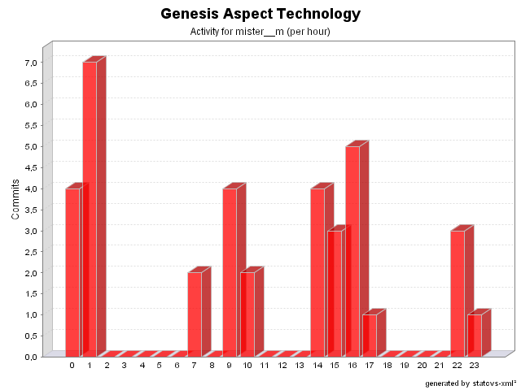

|
|
Login: mister__m
Fullname: mister__m
Revisions: 36
Lines of Code: 406
Added Lines of Code: 680
Lines of Code per Change: 11,3
|

| Date | Author | File/Message |
|---|---|---|
| 14/01/05 07:47 | mister__m |
Additional changes regarding issue # 105.
(1 Files changed,
1 Lines changed)
src/net/java/dev/genesis/aspect/FormControllerFactoryAspect.java 1.3
(+1
-1)
|
| 14/01/05 00:47 | mister__m |
Changes related to issue # 105.
(2 Files changed,
38 Lines changed)
src/net/java/dev/genesis/aspect/FormControllerFactoryAspect.java 1.2
(+31
-12)
src/net/java/dev/genesis/aspect/FormMetadataFactoryAspect.java 1.20
(+7
-16)
|
| 22/12/04 07:24 | mister__m |
Fix for issue # 129. There was indeed a minor bug.
(1 Files changed,
13 Lines changed)
src/net/java/dev/genesis/aspect/TimeoutAspect.java 1.6
(+13
-0)
|
| 21/12/04 01:59 | mister__m |
Fix for issue # 83.
(1 Files changed,
1 Lines changed)
src/net/java/dev/genesis/aspect/CriteriaCommandExecutionAspect.java 1.9
(+1
-2)
|
| 11/12/04 15:38 | mister__m |
Removed System.out.println.
(1 Files changed,
0 Lines changed)
src/net/java/dev/genesis/aspect/CriteriaCommandExecutionAspect.java 1.8
(+0
-1)
|
| 06/12/04 22:12 | mister__m |
Fix for issue # 122.
(1 Files changed,
5 Lines changed)
src/net/java/dev/genesis/aspect/ThinletMetadataFactoryAspect.java 1.4
(+5
-3)
|
| 29/11/04 15:00 | mister__m |
Improved fix for issue # 116.
(1 Files changed,
8 Lines changed)
src/net/java/dev/genesis/aspect/FormMetadataFactoryAspect.java 1.14
(+8
-3)
|
| 29/11/04 14:56 | mister__m |
Workaround for issue 116.
(1 Files changed,
15 Lines changed)
src/net/java/dev/genesis/aspect/FormMetadataFactoryAspect.java 1.13
(+15
-3)
|
| 28/11/04 16:03 | mister__m |
Fix for issue # 115.
(1 Files changed,
6 Lines changed)
src/net/java/dev/genesis/aspect/FormMetadataFactoryAspect.java 1.12
(+6
-1)
|
| 27/11/04 17:55 | mister__m |
Fix for issue # 82
(1 Files changed,
8 Lines changed)
src/net/java/dev/genesis/aspect/CriteriaCommandExecutionAspect.java 1.5
(+8
-5)
|